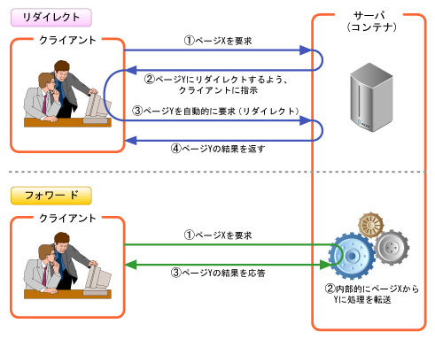

Flask基本機能¶
ルーティング¶
<変数名>にて値を取得できる:
@app.route('/rt_variable/<var>') def fn_rt_variable(var=None): return f'var = {var}, type(var) = {escape(type(var))}'
変数の型を制約することもできる:
@app.route('/rt_variable_i/<int:var>') @app.route('/rt_variable_f/<float:var>') @app.route('/rt_variable_p/<path:var>') @app.route('/rt_variable_u/<uuid:var>')
既定の値のみを受付けるようにすることもできる。以下の例では、"s1" or "s2" or "s3"のみを受付ける:
@app.route('/rt_variable_a/<any(s1,s2,s3):var>')
変数が複数ある場合や、各々の変数の初期値をある場合:
@app.route('/rt_variable_m/end') @app.route('/rt_variable_m/<s1>/end') @app.route('/rt_variable_m/<s1>/<s2>/end') def fn_rt_variable_m(s1=None, s2='default'): return f's1 = {s1}, s2 = {s2}'
テンプレート¶
http://python.zombie-hunting-club.com/entry/2017/11/03/223503
http://www.subarunari.com/entry/2017/09/30/003944
Flaskのデフォルトのテンプレートエンジンは jinja2 で HTML と Python のコードを同居させることができる。
テンプレート（～.html）はアプリケーションルート配下の templates ディレクトリ以下に置く。
テンプレート利用のためのインポート:
from flask import render_template
使用例:
@app.route('/ex_template') @app.route('/ex_template/<t1>') def fn_template(t1=None): return render_template('template_example.html', var=t1)
テンプレートhtmlファイル例:
<!doctype html> <title>Template Example</title> {% if var %} <h1>var:{{var}}</h1> {% else %} <h1>var is None.</h1> {% endif %}{{...}} で囲われた部分がPhthonのコード。
{{...}} はPythonの値をHTMLに出力するために用いるもので、Directiveと呼ぶ。
{%...%} はif文などの式を埋め込みたい場合に用いるもの。
リクエストオブジェクト¶
リクエストオブジェクト利用のためのインポート:
from flask import request
使用例:
@app.route('/ex_req', methods=['GET', 'POST']) def fn_req(): print(request.method) print(request.path) print(request.content_length) print(request.mimetype) print(request.args.get('u1')) print(request.args['u2']) print(request.args.getlist('u1')) print(request.form.get('f1')) print(request.form['f2']) print(request.form.getlist('f2')) print(request.headers.get('Connection')) print(request.headers['Connection']) print(request.headers.getlist('Connection')) return 'call fn_req().'
リダイレクト関数¶
リダイレクトとは、処理中のページから別のページ（ファイル）へ処理を移す方法
クラアイアントがページXを要求すると、サーバがページYを要求する指示をクライアントに戻す。これによって“クライアントは自動的に”ページYを要求し、結果としてページYがクライアントに戻される（ページXとページYは、必ずしも同一サーバからのレスポンスではない）。（図 12）
 図 12 リダイレクト¶
リダイレクト関数利用のためのインポート:
from flask import redirect
使用例:
@app.route('/ex_redirect') def fn_redirect(): return redirect(url_for('fn_rt_variable'))
上記使用例では、"fn_rt_variable"関数のルーティングにリダイレクトされ、"http://localhost:5000/ex_redirect/"と入力しEnterキーを押すと、"http://localhost:5000/rt_variable/"にURL表示が変わる。
デフォルトでは、httpステータスコード302でリダイレクトされる。任意のステータスコードでリダイレクトしたい場合は、以下のように"code="を付ける:
@app.route('/ex_redirect') def fn_redirect(): return redirect(url_for('fn_rt_variable'), code=301)
エラー処理¶
例外の発生方法について
abort()関数利用のためのインポート:
from flask import abort
使用例:
@app.route('/ex_abort/<int:var>') def fn_abort(var): abort(var) # httpステータスコード=varの例外を発生させる
所定コードの例外の捕捉方法について
使用例:
@app.errorhandler(400) # コード400のみを捕捉する def fn_error_handler(error): print(error) return 'call fn_error_handler().'
全てのHTTP例外の捕捉方法について
必要なインポート:
import werkzeug
使用例:
@app.errorhandler(werkzeug.exceptions.HTTPException) def fn_error_handler(error): print(error) return 'call fn_error_handler().'
ZeroDivision例外の捕捉方法について
使用例:
@app.errorhandler(ZeroDivisionError) def fn_error_handler(error): print(error) return 'call fn_error_handler().' @app.route('/ex_zderr') # ZeroDivision例外発生テスト用 def fn_zderr(): i = 1 / 0 return 'call fn_zderr().'
ファイルアップロード¶
使用例:
@app.route('/ex_upload', methods=['GET', 'POST']) def fn_upload(): if request.method == 'POST' and 'file' in request.files: f = request.files['file'] f.save('upload_files/' + secure_filename(f.filename)) return 'file uploaded.' return ''' <!doctype html> <title>Upload</title> <form method="post" enctype="multipart/form-data"> <input type="file" name="file"> <input type="submit" value="Upload"> </form> '''注釈
secure_filename()関数はセキュアなファイル名を作成する関数であり、ファイル名のパス区切り文字、スラッシュ、さらにはパス内の非ASCII文字にいたるまでを取り去る。 使用するためには、"from werkzeug.utils import secure_filename" が必要
make_response()関数¶
make_response()関数を使うことによって、レスポンスの内容（レスポンスヘッダやHTTPステータスなど）を細かく設定可能
make_response()関数利用のためのインポート:
from flask import make_response
使用例:
@app.route('/ex_res/<int:var>') def fn_res(var): resp = make_response('call fn_res().', var) resp.headers['ex_res'] = 'OK!!' return resp
実行結果（PowerShell）:
PS C:\Users\i> Invoke-WebRequest http://localhost:5000/ex_res/200 StatusCode : 200 StatusDescription : OK Content : call fn_res(). RawContent : HTTP/1.0 200 OK ex_res: OK!! Content-Length: 14 Content-Type: text/html; charset=utf-8 Date: Mon, 28 Oct 2019 12:43:02 GMT Server: Werkzeug/0.16.0 Python/3.8.0 call fn_res(). Forms : {} Headers : {[ex_res, OK!!], [Content-Length, 14], [Content-Type, text/html; charset=utf-8], [Date, Mon, 28 Oct 2019 12:43:02 GMT]...} Images : {} InputFields : {} Links : {} ParsedHtml : mshtml.HTMLDocumentClass RawContentLength : 14
クッキー¶
使用例:
@app.route('/ex_cookie') # クッキー読出し用 @app.route('/ex_cookie/<var>') # クッキー設定用 def fn_cookie(var=None): if var is None: ck = request.cookies.get('ck') # クッキー読出し return f'ck = {ck}' else: resp = make_response('set cookie.') resp.set_cookie('ck', var) # クッキー設定 return resp
セッション¶
セッション利用のためのインポート:
from flask import session
使用例:
app.secret_key = 'test' # セッションの暗号化で利用するキーを事前に設定する @app.route('/ex_session') # セッション読出し用 @app.route('/ex_session/<var>') # セッション設定用 def fn_session(var=None): if var is None: sess = session.get('sess') # セッション読出し return f'sess = {sess}' else: session['sess'] = var # セッション設定 return 'set session.'
フラッシュ¶
一度だけ表示したいメッセージなどに利用できる機能
フラッシュ利用のためのインポート:
from flask import flash, get_flashed_messages
使用例:
app.secret_key = 'test' # フラッシュの暗号化で利用するキーを事前に設定する @app.route('/ex_flash') @app.route('/ex_flash/<var>') def fn_flash(var=None): if var is None: fl = get_flashed_messages() # 保存したメッセージの取得（取得するとメッセージは削除される） return f'fl = {fl}' else: flash(var) # メッセージの保存 return 'set flash.'
実行例:
# ブラウザ入力（メッセージ保存） http://localhost:5000/ex_flash/one http://localhost:5000/ex_flash/two http://localhost:5000/ex_flash/three # ブラウザ入力（メッセージ取得） http://localhost:5000/ex_flash # ブラウザで表示される内容 fl = ['one', 'two', 'three'] # ブラウザ入力（メッセージ再取得） http://localhost:5000/ex_flash # ブラウザで表示される内容 fl = [] # 一度表示したので削除された
カテゴリを指定することも可能:
@app.route('/ex_flash') @app.route('/ex_flash/<var>') def fn_flash(var=None): if var is None: fl = get_flashed_messages(with_categories=True, category_filter=['debug', 'info']) return f'fl = {fl}' else: flash('DEBUG:' + var, 'debug') flash('INFO:' + var, 'info') flash('ERROR:' + var, 'error') return 'set flash.'
ロギング¶
pythonのロギング機能を簡単に利用できるようになっている。
使用例:
@app.route('/ex_logging') @app.route('/ex_logging/<var>') def fn_logging(var=None): app.logger.info(var) app.logger.warning(var) app.logger.error(var) return 'call fn_logging().'
実行例:
# ブラウザ入力 http://localhost:5000/ex_logging/123 # 標準入出力（PowerShellなど）へログが出力される [2019-10-28 23:00:21,901] INFO in app: 123 [2019-10-28 23:00:21,901] WARNING in app: 123 [2019-10-28 23:00:21,902] ERROR in app: 123
ログをファイル出力するには、まずlogging.confファイルを作成する:
# logging.conf ファイル [loggers] keys=root [handlers] keys=fileHandler [formatters] keys=logFormatter [logger_root] handlers=fileHandler [handler_fileHandler] class=logging.FileHandler level=DEBUG formatter=logFormatter args=('flask_work.log', ) [formatter_logFormatter] class=logging.Formatter format=[%(asctime)s]:[%(levelname)s]:[%(filename)s:%(lineno)d]:%(message)s
ログをファイル出力するために必要なインポート、および上記logging.conf ファイル読込:
import logging.config logging.config.fileConfig('logging.conf')
ファイルダウンロード¶
app.pyからの相対パスのファイルをダウンロード¶
必要なインポート:
from flask import send_file
使用例:
@app.route('/ex_send_file/<path:var>') def fn_send_file(var): return send_file(var, as_attachment=True)
上記例では、<path:var>で指定したapp.pyからの相対パスのファイルをダウンロードしファイルに保存する。例えば、"localhost:5000/ex_send_file/app.py"と入力すると、app.pyを任意の場所にダウンロードできる。
指定されたファイル名でダウンロード¶
使用例:
@app.route('/ex_send_file_obj/<var>') def fn_send_file_obj(var): fp = io.BytesIO(var.encode()) return send_file(fp, attachment_filename='test.txt', as_attachment=True)
上記例では、<var>の内容の"test.txt"ファイルをダウンロードし保存する。例えば、"localhost:5000/ex_send_file_obj/TEST"と入力すると、"TEST"と記載された"test.txt"ファイルを任意の場所にダウンロードできる。
指定したディレクトリからの相対パスのファイルをダウンロード¶
必要なインポート:
from flask import send_from_directory
使用例:
@app.route('/ex_send_from_dir/<path:var>') def fn_send_from_dir(var): return send_from_directory('C:/flask_work/', var, as_attachment=True)
上記例では、<path:var>で指定した'C:/flask_work/'からの相対パスのファイルをダウンロードしファイルに保存する。例えば、"localhost:5000/ex_send_from_dir/app.py"と入力すると、'C:/flask_work/app.py'を任意の場所にダウンロードできる。
flaskコマンド¶
PowerShellの仮想環境において:
flask
と入力すると、flaskコマンドの説明が表示される。コマンドはroutes、run、shellの3種類:
Usage: flask [OPTIONS] COMMAND [ARGS]...
A general utility script for Flask applications.
Provides commands from Flask, extensions, and the application. Loads the
application defined in the FLASK_APP environment variable, or from a
wsgi.py file. Setting the FLASK_ENV environment variable to 'development'
will enable debug mode.
> set FLASK_APP=hello.py
> set FLASK_ENV=development
> flask run
Options:
--version Show the flask version
--help Show this message and exit.
Commands:
routes Show the routes for the app.
run Run a development server.
shell Run a shell in the app context.
runコマンドのヘルプを確認したい場合は:
flask run --help
と入力する:
Usage: flask run [OPTIONS]
Run a local development server.
This server is for development purposes only. It does not provide the
stability, security, or performance of production WSGI servers.
The reloader and debugger are enabled by default if FLASK_ENV=development
or FLASK_DEBUG=1.
Options:
-h, --host TEXT The interface to bind to.
-p, --port INTEGER The port to bind to.
--cert PATH Specify a certificate file to use HTTPS.
--key FILE The key file to use when specifying a
certificate.
--reload / --no-reload Enable or disable the reloader. By default
the reloader is active if debug is enabled.
--debugger / --no-debugger Enable or disable the debugger. By default
the debugger is active if debug is enabled.
--eager-loading / --lazy-loader
Enable or disable eager loading. By default
eager loading is enabled if the reloader is
disabled.
--with-threads / --without-threads
Enable or disable multithreading.
--extra-files PATH Extra files that trigger a reload on change.
Multiple paths are separated by ';'.
--help Show this message and exit.
routesコマンドでは、app.pyで実装した全てのrouteが表示される:
flask routes
と入力すると:
Endpoint Methods Rule
---------------- --------- ----------------------------------
fn_abort GET /ex_abort/<int:var>
fn_cookie GET /ex_cookie
fn_cookie GET /ex_cookie/<var>
fn_flash GET /ex_flash
fn_flash GET /ex_flash/<var>
fn_logging GET /ex_logging
fn_logging GET /ex_logging/<var>
fn_redirect GET /ex_redirect
fn_req GET, POST /ex_req
fn_res GET /ex_res/<int:var>
fn_rt_variable GET /rt_variable/
fn_rt_variable GET /rt_variable_f/<float:var>
fn_rt_variable GET /rt_variable_i/<int:var>
fn_rt_variable GET /rt_variable_a/<any(s1,s2,s3):var>
fn_rt_variable GET /rt_variable_u/<uuid:var>
fn_rt_variable GET /rt_variable_p/<path:var>
fn_rt_variable GET /rt_variable/<var>
fn_rt_variable_m GET /rt_variable_m/end
fn_rt_variable_m GET /rt_variable_m/<s1>/end
fn_rt_variable_m GET /rt_variable_m/<s1>/<s2>/end
fn_send_file GET /ex_send_file/<path:var>
fn_send_file_obj GET /ex_send_file_obj/<var>
fn_send_from_dir GET /ex_send_from_dir/<path:var>
fn_session GET /ex_session
fn_session GET /ex_session/<var>
fn_template GET /ex_template
fn_template GET /ex_template/<t1>
fn_upload GET, POST /ex_upload
fn_zderr GET /ex_zderr
hello GET /
static GET /static/<path:filename>